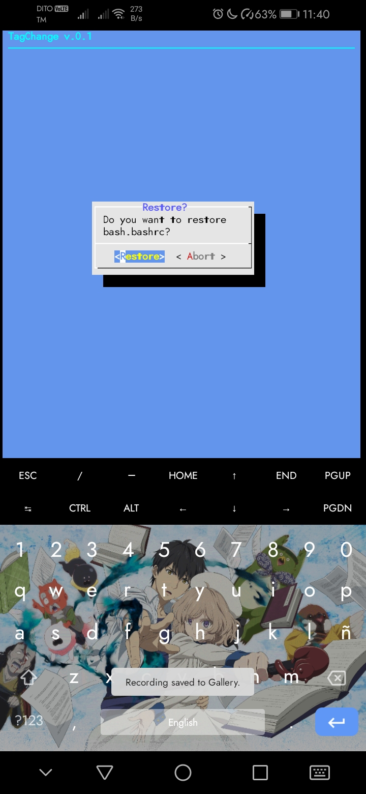
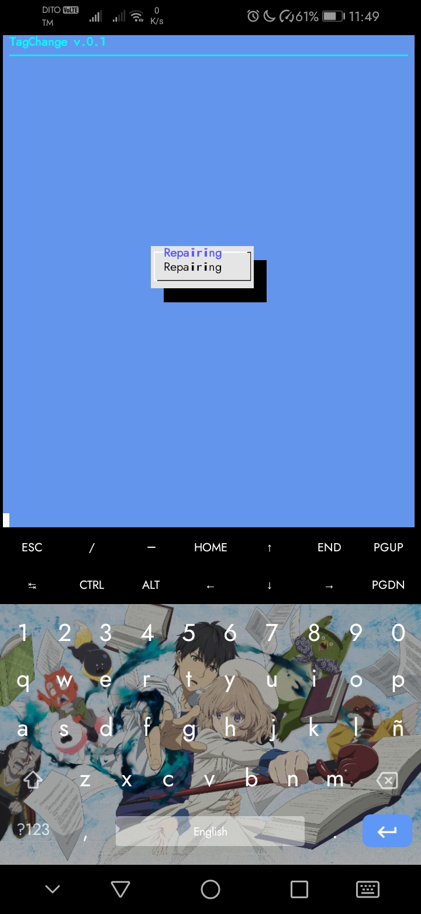
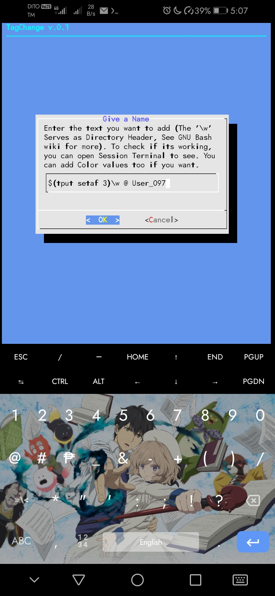

Hello, this is the Help Page of the Repository, that is written on HTML, Much more detailed info on this form than the TXT version.
Version 0.1 | |
Hello, this is the Help Text of the Script
Here are the guide that should help you get use to this Page
ESC can also Force Exit the script, not recommended when the script is processing
This is a warning to the user that its modifying the $PREFIX/etc.. You must have a good knowledge of how Bash shell script works and how works too by visiting the GNU Bash Website Wiki
These are the Menus, these are the options..
ChangeIt's Responsible to change your name in the Command Header. You can actually apply Color Pallete to it.
But be Careful! Doing wrong things on this may damage the Bash.
\w is just a header of Directory, the one who is responsible for the Location of your current directory you're in.
Restore This function, Restore your Bashrc to default by using the file from your last configured bash.bashrc
Repair Repair fixes your Bash.bashrc by importing the bash config file that is already in this script, may have some structural compat issues, because of differences of /data structure..
Help and AboutBasically, they're just Help page and About.
Basically no. But if you dont have any knowledge of Bash, then there may be some issues arising.
Do this script has a Spyware?No, why would you ask that?
Can i use Tput as Color System? How about this too? ([0:32m\])You can use sh coloring system too actually, and in fact, tput runs on that..
How can i use tput colors ?Do this
 $(tput setaf 3)Is coloring Heading, doing this "$()" cases the command and tell to run and color this text, suggest to use $(tput sgr0) to reset
\wIts responsible to tell you the storage location at its side, See GNU Bash for more info.
UserYou can type your desired name now. we suggest to do : $(tput sgr0) to reset colors at the end so if you type things, it wouldn't be the same as the header.
End of the Help Page, please go to GitHub or Gitlab if there's any issues. or contact via email.